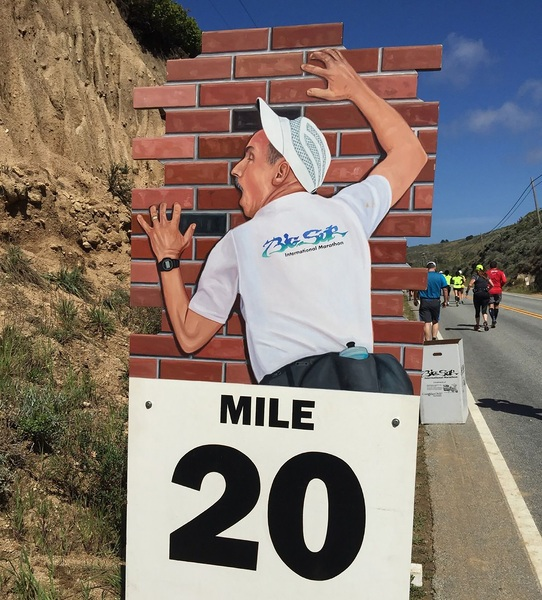

Recipe for a Marathon Meltdown

Description
Are you curious about what it's like to cry while running? Have you ever wondered how many energy gels will make you puke? Interested in wiping your butt with an old sweatshirt? If so, this recipe is for you! These step-by-step instructions will have you cooking your first marathon meltdown in no time!
- Preparation time: 16-18 weeks
- Cook time: 4-6 hours
Ingredients
- 4 tablespoons of unmitigated gall
- 2 cups of lack of preparation
- 25 grams of you doing you
Steps
- Don't follow a training plan. It's best just to run when you feel like it. Some experienced runners claim you should try to hit weekly milage goals and do at least an 18-20 mile run. But what do they know? It's about the journey not the destination. And you want to enjoy the journey, right?
- In the weeks leading up the the big race, increase your mileage quickly. This will help prevent injuries that might be caused by slow, steady, consistent progression.
- The day before the marathon, try a cuisine or dish that you've never had before! Always wanted to try Thai food? Give it a go! You don't have to run today, but be sure to walk at least 10 miles so that there's plenty of blood flow to your legs.
- On race day, be sure to show up around 15 minutes before the marathon starts. That will totally be plenty of time to get through security, warm up, go to the bathroom, and head to the starting line.
- When the race starts be sure to run a faster than your goal pace. You didn't come this far to have realistic expectations!
- If you follow the above steps you should be in full meltdown mode somewhere around mile 18. Season to taste and enjoy!
DISCLAIMER: The above recipe is satire. Please do not run a marathon without properly training.
Home